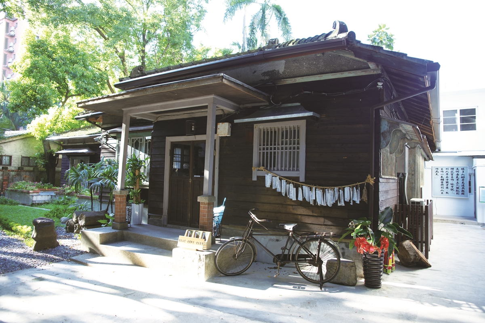
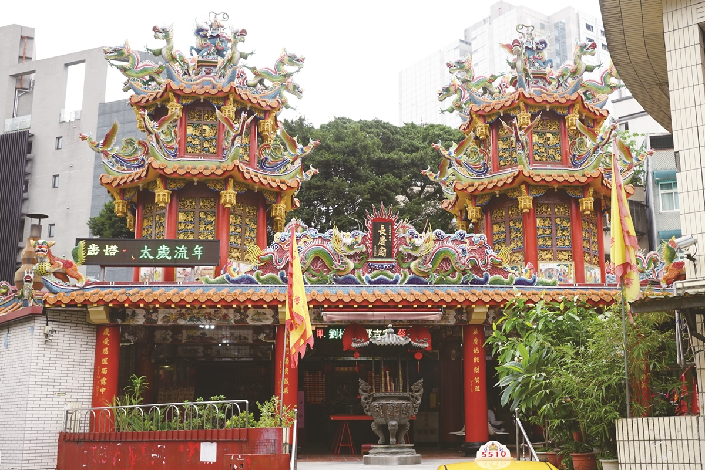
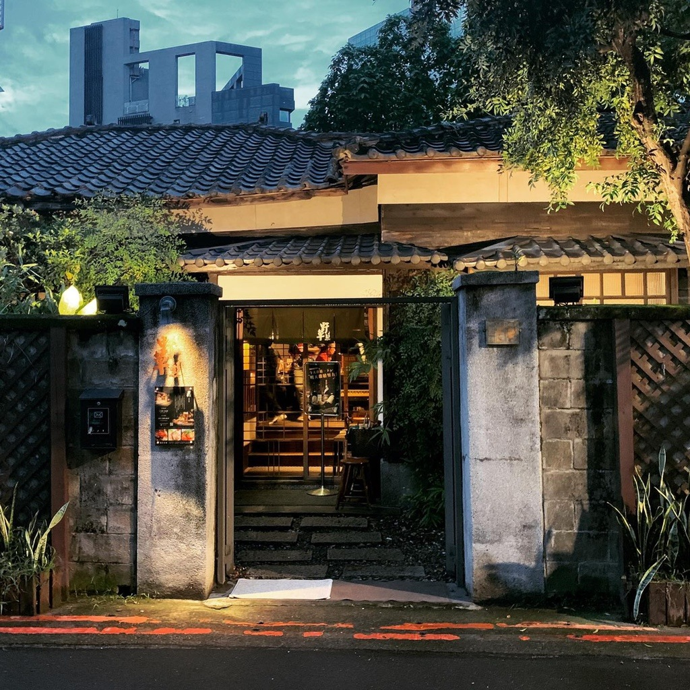
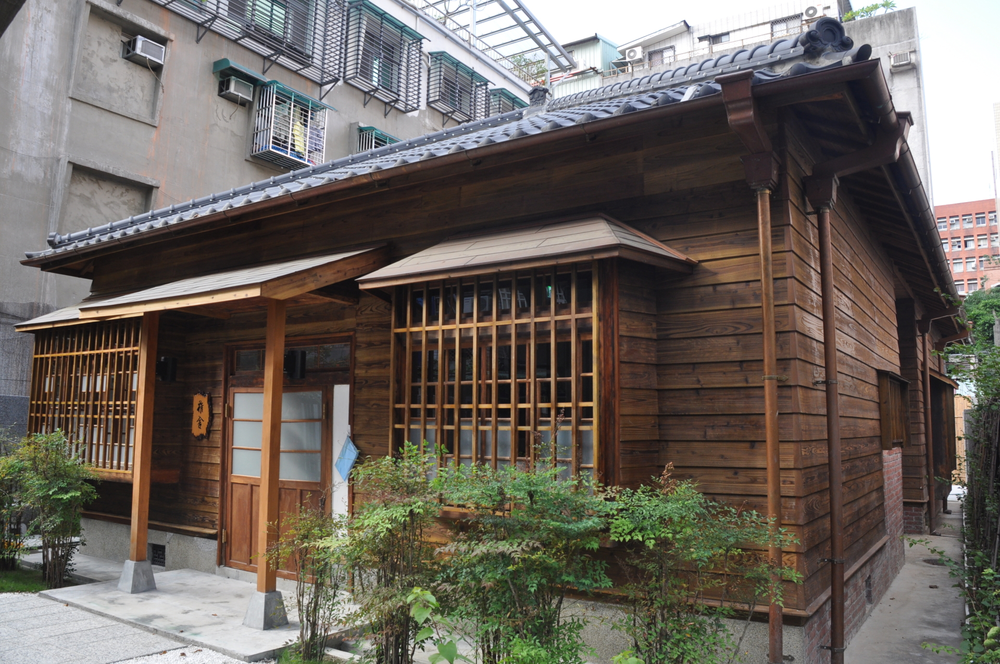

@@include('./layout/header.html',{
"display2":"show"
})
@@include('./layout/breadCrumb.html',{
"link1":"./index.html",
"innerText1":"台北散步",
"link2":"./mapgame.html",
"innerText2":"攻略攻略圖趣",
"link3":"./google.com.tw",
"innerText3":"",
"link4":"./google.com.tw",
"innerText4":"",
"link5":"./google.com.tw",
"innerText5":"",
"link6":"./google.com.tw",
"innerText6":""
})







start

Close
Q: 章魚是魚嗎？
1. 是
2. 不是
3. 介於是和不是之間
#
#

@@include('./layout/footer.html')